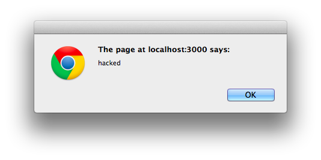
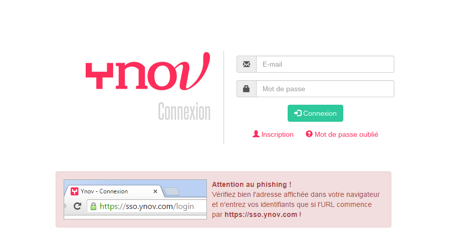

Web Hacking 101
Rémi Martin de abia
Lors des dernières séances
- Prise d'information sur une cible
- Scan de ports
- Scan de vulnérabilités
Programme du jour
- SQLi
- LFI
- Upload
- XSS
Web Hacking
Concepts de base
- Tout peut etre manipulé par l'utilisateur
- Un controle JS/HTML n'est pas un moyen de sécuriser
Web Hacking
Concepts de base : Proxy
Un proxy est une application qui va se placer entre le navigateur et le serveur. Grâce à lui on va pouvoir modifier les paramètres d'une requette.
SQLi
| Utilité | Bypass authentification / dump de base / upload de backdoor |
| Difficulté d'exploitation | Variable |
| Difficulté de correction | Simple |
"Select * from users
where login = '$_POST['login']'
and password = '$_POST['password']'"
$_POST['login']="lala"
$_POST['password']="12346"
La requette renvoit les informations de lala
Bypass authentification
"Select * from users
where login = '$_POST['login']'
and password = '$_POST['password']'"
$_POST['login']="lala"
$_POST['password']="' or 1=1 -- "
Bypass authentification
"Select * from users
where login = 'lala'
and password = '' or 1=1 -- <-- Condition vraie
On récupère les informations de lala
Sans connaitre son mot de passe
Aller plus loin avec les SQLi
Sur des champs non ou mal protégé il est possible de récuperer des informations depuis une injection SQL
Pour cela on va utiliser des verbes SQL tels que UNION
SQLi avancés
Attention cependant avec UNION il faut qu'il y ait le meme nombre de parametres des deux cotés de la requêtte
Il est possible d'obtenir des infos sur les tables / Champs grâce a des composants de la base de donnés
Try Here : http://juliegareni.fr/galerie.php?id=2
SQLi
Protections
- Filtrer les entrés utilisateurs
- Ne pas utiliser directement une variable GET/POST/.. dans une requette SQL
- Utiliser autant que possible des procédures stockés / requêttes préparés
LFI
Local File Inclusion
LFI
L'objectif d'une LFI est d'include un fichier dans la page actuelle
Fonction sensible en php -> Include
include($_GET['page']);
include('/etc/passwd');
Epic Win
Avec un include il est possible de faire de nombreuses choses
- Inclure un fichier
- Lire un fichier PHP -> Utilisation des wrappers
- Lire un fichier sur le serveur
Corriger une LFI
- Controler les entrés utilisateurs
- Ne pas utiliser une entrée utilisateur pour inclure un fichier
- Utiliser des directives de restriction d'inclusion ( :D )
Faille Upload
Toujours la meme histoire
NEVER TRUST THE USER
Imaginons un formulaire permettant d'uploader des images
Uploadons y autre chose qu'une image ..
Puis trouvons le fichier et faisons le executer
Exemple de backdoor
< ?php system($_GET['cmd']); ? >
Aucun controle coté client n'est efficace
Coté serveur ces controles sont inefficaces
- Verifier l'extension
- Verifier le type mime
Alert('XSS')
XSS
Execution de code javascript sur le client permet de :
- Afficher un message
- Modifier l'affichage ( pas le contenu ) d'un site
- Voler les cookies
XSS
< script >alert('XSS');< /script >
On va tenter d'injecter des balises "script" dans la page via les formulaires de commentaires par exemple. Ces balises contiennent notre code JS
XSS
Pourquoi voler les cookies ?
Les sessions coté serveur sont stockés dans un cookie. Celui ci révèle votre identité au serveur via l'identifiant qu'il contient.
Si un attaquant vole votre cookie, il vole votre session et peut donc se connecter a votre place
XSS
Pourquoi modifier l'affichage d'un site ?
Securiser son code contre les XSS
- Vérifier les entrés utilisateurs
- Filtrer ces entrés
- Ajouter les flags Secure et HTTP Only aux cookies